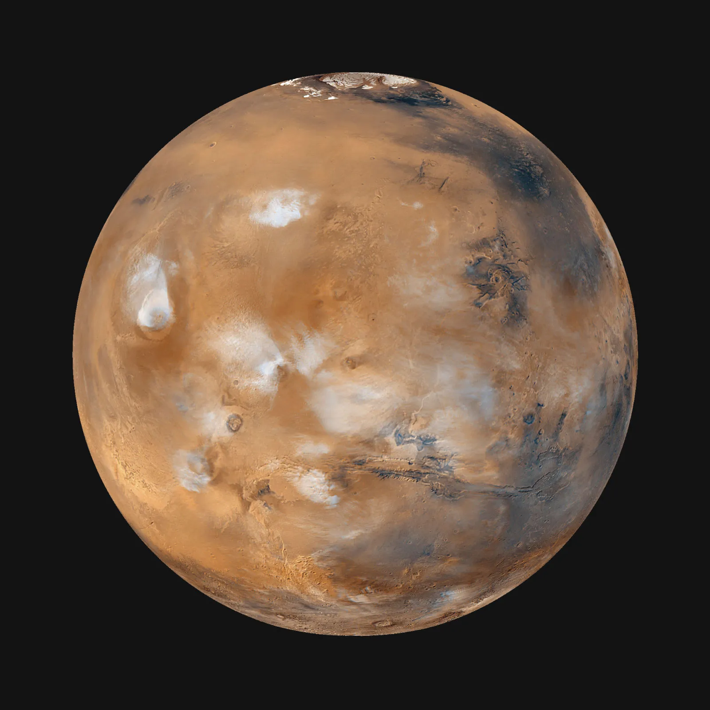

Fast facts about Mars
- Mars is the fourth planet from the Sun.
- It has seasons, polar ice caps and giant volcanoes.
- Robotic rovers have explored its surface.
- Evidence suggests that liquid water existed there long ago.

Watch the latest official NASA Artemis video on the source page.
More information: Wikipedia: Mars | NASA: Mars